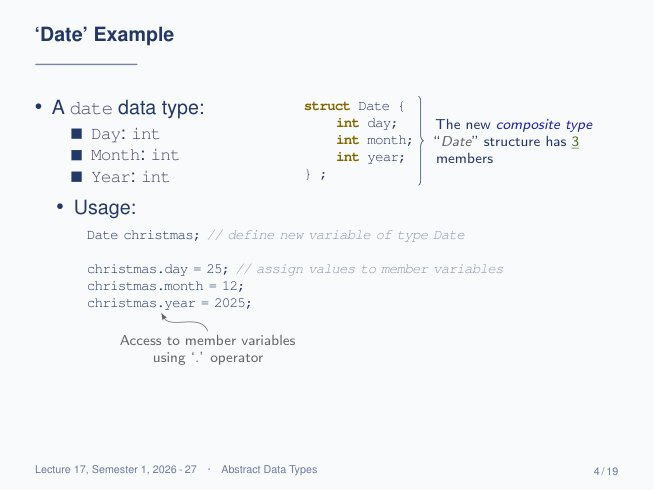
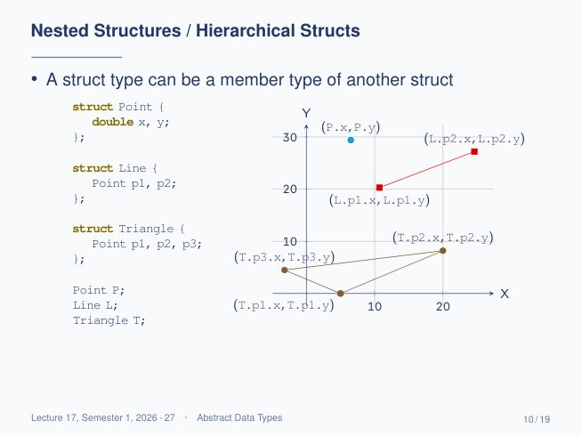
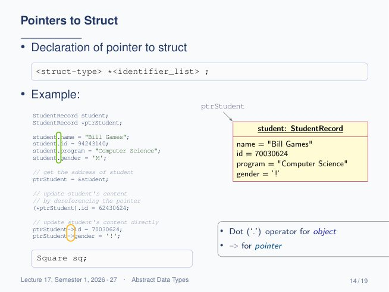

SOE105 · 第 14 章
抽象数据类型与结构体
Abstract Data Types & Structs
虚线下划线为术语；悬停查看中文、英文与释义，完整词典见“术语”。
本章目录
本章解决一个很实际的问题：一组分属不同类型、却总是一起出现的数据，怎么打包成一个整体。讲义从“日期要三个变量”出发，引出 struct 的定义、成员访问、整体赋值、嵌套、数组与指针，最后用 union、enum、typedef 收束“自定义类型”这一族工具。
本章要点
- 数组只能装同类型的元素；结构体把不同类型的变量收成一个整体，装“本来就应该放在一起”的数据。
- struct 定义的形式是 struct 类型名 { 成员声明; }，右花括号后的分号不能省。
- 成员用点号访问：变量.成员；声明只分配存放成员的空间，成员的值要自己赋。
- 同类型的 struct 变量可以整体赋值，也可以按值传参、按值返回；按引用传参才会改到调用者的变量。
- struct 的成员可以是数组，也可以是另一个 struct；访问时按层用点号或下标一路穿下去。
- 指向 struct 的指针用 -> 访问成员，(*p).m 与 p->m 等价。
- union 的成员共用同一块存储，同一时刻只有一种解释有效，主要用来省内存。
- enum 定义一组有名字的取值，typedef 给已有类型再起一个名字。
14.1 从三个变量到一个类型
讲义用一个“简单问题”开场：提到一个日期时，需要三个变量分别表示它的日、月、年；当要更新的日期很多时，这个更新过程既笨拙又容易出错。它由此提出目标——能不能把日期表示成单个数据类型或对象，从而简化这件事？
要回答这个问题，先要看清数组的边界。讲义提醒：数组是同一类型变量的集合，而现实中的数据通常不是同一种类型。把不同类型的变量收在一起，就得到结构体struct。讲义的定位句是“structures hold data that belong together”——结构体装的是本来就应该放在一起的数据。
讲义给了三组典型例子：学生记录（学号、专业、性别、入学年份……）、银行账户（账号、户名、币种、余额……）、通讯录（姓名、地址、电话、邮箱……）。它还补了一条术语备注：在数据库应用中，结构体被称为记录record。
| 维度 | 数组 | 结构体 |
|---|---|---|
| 元素/成员类型 | 必须全部相同 | 每个成员可以不同 |
| 有多少个 | 由声明时的长度决定 | 由定义里的成员个数决定 |
| 怎么取其中一个 | 按下标 a[i] | 按名字 v.member |
| 适合表示 | 一批同质数据，如 10 个成绩 | 一条记录，如学号 + 专业 + 性别 |

L17 p.1、p.4
14.2 struct 的定义：Date 与两个更复杂的例子
讲义先给通用形式，每个标识符定义结构体的一个成员：
struct <struct-type> {
<type1> <identifier_list1>;
<type2> <identifier_list2>;
...
};第一个例子就是开场提出的日期。讲义把 day、month、year 三个 int 放进一个名为 Date 的结构体，于是 Date 成了一个新类型，这个复合类型有三个成员：
struct Date {
int day;
int month;
int year;
};
Date christmas; // define a new variable of type Date
christmas.day = 25; // assign values to member variables
christmas.month = 12;
christmas.year = 2025;这里有两个细节值得记住。第一，定义之后 Date 就是类型名，声明变量时直接写 Date christmas;，不必再带 struct 关键字；第二，三行赋值都用点号落到具体成员上，christmas 本身没有被整体赋值，被赋值的是它的三个格子。
接下来的两个例子说明成员类型可以很杂。StudentRecord 有四个成员；BankAccount 的成员里既有简单类型，也有数组 accountNo[10]，还有另一个结构体 dateOfBirth：
struct StudentRecord {
string name;
int id;
string program;
char gender;
};
struct BankAccount {
string name;
int accountNo[10];
double balance;
Date dateOfBirth;
};也就是说，成员的类型可以是简单类型、数组，或者另一个结构体。最后一种会引出 14.5 的嵌套结构体；数组成员则说明一个结构体变量内部可以装下一整排数据。
L17 p.5–6
14.3 声明变量与访问成员
声明结构体变量的写法与普通变量一致：<structure-type> <identifier_list>;。例如 StudentRecord student1, student2; 一句就声明了两个 StudentRecord 变量，每个变量都各自拥有一整套成员。讲义用一张成员表画出这两个变量：student1 有 name、id、program、gender 四格，student2 也有四格，格子里都标着占位符（讲义的 -X_@-），表示还没有赋值。
访问成员用点号，形式是 <structure-variable>.<member_name>。讲义把这种访问叫作成员访问member access：点号左边是结构体变量，右边是成员名，整个表达式可以当普通变量用，既能读也能写。
StudentRecord student1, student2;
student1.name = "Kamado Tanjiro";
student1.id = 30624700;
student1.program = "Artificial Intelligence";
student1.gender = 'M';
cout << "The student is ";
if (student1.gender == 'F')
cout << "Ms. ";
else
cout << "Mr. ";
cout << student1.name << endl;这段程序的输出是 The student is Mr. Kamado Tanjiro（幻灯片上名字因换行分成两行显示）。前四行把四个成员逐个填好；后面根据 gender 决定称呼，再拼接 name。注意 student1.gender 只是一个 char，可以像普通 char 一样用 == 比较；student1.name 只是一个 string，可以直接 << 输出。成员访问的结果，类型就是成员自己的类型。
L17 p.7–8
14.4 整体赋值与函数传参
讲义给结构体变量的评价是“behave like simple data types”——行为与简单数据类型一致，具体体现在三件事上：赋值时把全部成员值复制到另一个同类型的变量；按值传参时复制全部成员值；也可以按引用传参。
赋值写成 student2 = student1;。执行后 student1 与 student2 的四个成员一一相同：name 都是 "Kamado Tanjiro"，id 都是 30624700，program 都是 "Artificial Intelligence"，gender 都是 'M'。复制的是每一个成员的值，复制完成后两个变量各自持有一份，改其中一个不会动到另一个。
讲义接着用复数结构体演示传参与返回。定义放在头文件里，主程序通过 #include 使用；函数按值接收两个 Complex，再按值返回一个 Complex：
// File: Complex.h
struct Complex {
float real;
float imaginary;
};
// File: main.cpp
#include <iostream>
#include "structs.h"
Complex complex_multiply(Complex n1, Complex n2);
int main() {
Complex data, x;
x.real = 1;
x.imaginary = 0.5;
x = data; // copy all members
x = complex_multiply(x, data); // pass by value, return struct value
return 0;
}这里的两处整体操作都是“复制”：x = data 把 data 的所有成员复制给 x；complex_multiply(x, data) 把两个实参各复制一份给形参 n1、n2，函数返回的结构体再整体赋给 x。函数体内部怎么算，讲义没有展开，但从调用形式就能看出结构体可以像 int 一样被传递和返回。
| 写法 | 函数收到什么 | 函数里改成员，调用者受影响吗 |
|---|---|---|
| void f(Complex c) | 全部成员的一份副本 | 不受影响，改的是副本 |
| void f(Complex &c) | 原变量的别名 | 受影响，改的就是原变量 |
| Complex f(Complex c) | 副本；返回值也是一份结构体 | 不受影响，但可以通过返回值带回结果 |
L17 p.9–10
14.5 嵌套结构体：Point 装进 Line 与 Triangle
讲义的定义很直接：一个 struct 类型可以作为另一个 struct 的成员类型。它用几何图形举例——Point 有两个坐标，Line 有两个端点，Triangle 有三个顶点：
struct Point {
double x, y;
};
struct Line {
Point p1, p2;
};
struct Triangle {
Point p1, p2, p3;
};
Point P;
Line L;
Triangle T;于是一个 Line 变量里装着两个 Point，一个 Triangle 变量里装着三个 Point。讲义在坐标图上标出了 P、(L.p1.x, L.p1.y)、(L.p2.x, L.p2.y)、(T.p1.x, T.p1.y)、(T.p2.x, T.p2.y)、(T.p3.x, T.p3.y) 这些位置，说明嵌套结构体在逻辑上就是“整块套整块”。
访问时按层往下写，每经过一个结构体就加一个点号，最后落在最内层的简单成员上。给 L 的左端点赋值，要分别给 L.p1.x 与 L.p1.y 两个 double 赋值；T.p3 的坐标同理。读这种表达式的方法是从左往右：先取 L 这个 Line，再取它的 p1 这个 Point，最后取 x 这个 double。

Clean vector diagram of nested structs on a Cartesian plane: a Point box with fields x and y; a Line box containing two Point boxes labelled p1 and p2; a Triangle box containing three Point boxes labelled p1, p2, p3; on the axes six marked points labelled (P.x,P.y), (L.p1.x,L.p1.y), (L.p2.x,L.p2.y), (T.p1.x,T.p1.y), (T.p2.x,T.p2.y), (T.p3.x,T.p3.y). Flat 2D, thin 1.5 px strokes, muted slate blue and warm grey palette, white background, English labels, no cartoon, no gradient, no shadow.
L17 p.11
14.6 结构体数组与结构体里的数组
普通数组的每个元素是同一种数据；结构体数组的每个元素却是一整条记录，里面装着多种类型。讲义把这两种画在同一页上对比：0 到 99 的一排格子里，前者每格放一个值，后者每格放一整套成员。
于是可以声明 StudentRecord Class[100];，再用 Class[98].name、Class[98].id 这样的表达式访问第 98 条记录的具体成员。整条记录的复制也成立：Class[0] = Class[98]; 会把 98 号元素的四个成员全部复制到 0 号元素。
StudentRecord Class[100];
Class[98].name = "Zenitsu Agatsuma";
Class[98].id = 53420213;
Class[98].program = "Electrical Engineering";
Class[98].gender = 'M';
Class[0] = Class[98];反过来的组合也存在：结构体里可以放数组。讲义用正方形举例，Square 的成员是四个 Point，sq.vertex[0] 就是第一个顶点：
struct Square {
Point vertex[4];
};
Square sq;
sq.vertex[0].x = 4;
sq.vertex[0].y = 1;讲义给的方块四个角是 (4,1)、(10,1)、(10,3)、(4,3)，并画出 sq 的内部：vertex[0] 到 vertex[3] 四格，第一格已经填成 4、1，其余三格还是问号——因为示例只给 vertex[0] 赋了值。这说明结构体里的数组成员与普通数组一样，是一个元素一个元素赋值。
L17 p.13–15
14.7 指向结构体的指针：点号与箭头
指向结构体的指针按 <struct-type> *<identifier_list>; 声明。讲义的例子先声明一个 StudentRecord 变量 student 和一个指向它的指针 ptrStudent，再用两种写法改同一个成员：
StudentRecord student;
StudentRecord *ptrStudent;
student.name = "Bill Games";
student.id = 94243140;
student.program = "Computer Science";
student.gender = 'M';
ptrStudent = &student; // get the address of student
(*ptrStudent).id = 62430624; // dereference the pointer, then select the member
ptrStudent->id = 70030624; // update the member directly
ptrStudent->gender = '!';两种写法做的是同一件事：先顺着指针找到 student 这个变量，再改它的 id 成员。讲义在页脚把规则压成一行——点号（.）用于对象，箭头（->）用于指针。程序结束时 student.id 是 70030624、student.gender 是 '!'，因为通过指针改的就是 student 本体，不是副本。
| 写法 | 左边是什么 | 说明 |
|---|---|---|
| student.id | 结构体变量 | 直接用点号取成员 |
| (*ptrStudent).id | 解引用后的结构体 | 先 * 拿到变量，再取成员，括号必须有 |
| ptrStudent->id | 指向结构体的指针 | 箭头是“解引用 + 取成员”的缩写 |

L17 p.16
14.8 union：同一块存储的多种解释
讲义把联合体union定义为一种数据类型：它有多种解释，但同一时刻只有一种成立；主要用途是节省内存空间。定义形式与 struct 相似，只是关键字换成 union：
union type-name {
type1 identifier1;
type2 identifier2;
...
};讲义的例子把“同一时刻只有一种解释”落到了具体场景上：一个员工要么是管理者、要么是普通员工，两种身份对应两套不同的等级枚举，于是用一个 union 把两套等级装在一起：
enum manager_rank { senior, junior, assistant };
enum worker_rank { leader, workerII, workerI };
union staff_rank {
manager_rank manager;
worker_rank worker;
};使用时先判断这个人属于哪一类，再选用对应的成员。讲义的主程序调用 is_manager()，为真就 switch (rank.manager)，为假就 switch (rank.worker)：
staff_rank rank;
if (is_manager()) {
switch (rank.manager) {
case senior:
// ...
break;
case junior:
// ...
break;
default:
// ...
}
} else {
switch (rank.worker) {
// ...
}
}讲义在这一页用大写标出 WATCH OUT：用错解释可能造成灾难性后果，例如对管理者使用 rank.worker。原因在于 union 的成员共用同一块存储，写进去的是哪一套，读出来就必须按哪一套解释；类型系统不会替你记住“现在装的是谁”。
| 维度 | struct | union |
|---|---|---|
| 成员的存储 | 每个成员各占自己的存储 | 所有成员共用同一块存储 |
| 同时有效的成员 | 全部成员可以同时有效 | 同一时刻只有一种解释有效 |
| 主要用途 | 把属于一起的数据打包 | 节省内存空间 |
| 典型例子 | Date、StudentRecord、BankAccount | staff_rank（管理者或员工二选一） |
L17 p.18–19
14.9 enum、typedef 与内存布局
讲义最后一节讲“用户自定义类型”：可以定义并命名自己的类型，例如 enum 和 struct。给已有类型再起一个名字用 typedef，形式是 typedef <type-definition> <new-type-name>：
enum color { blue, red, yellow };
typedef color light; // light is another name for color
typedef color paint; // paint is another name for color
typedef int score; // score is another name for int
light beam;
paint paper;
score my_score;enum 把 blue、red、yellow 这三个有名字的取值归到 color 这个类型下；typedef 则只是给已有类型添一个别名，light 和 paint 都是 color 的另一个名字，score 就是 int。声明变量时用别名与用原名完全等价：light beam; 声明的是一个 color 类型的变量。
| 类型 | 存储怎么安排 | 同一时刻有效的数据 |
|---|---|---|
| struct | 每个成员各占自己的存储；数组成员占整个数组，嵌套 struct 占整块 | 全部成员 |
| union | 所有成员共用同一块存储 | 只有一种解释 |
| enum | 一组有名字的取值，归在一个类型名下 | 取其中一个值 |
| typedef | 不产生新的数据，只是已有类型的别名 | 与原名同一类型 |
把这张表和第 14.6 节连起来看：结构体变量之所以能“整块复制”，是因为每个成员都有自己的存储；结构体数组之所以能一格装一条记录，是因为每个元素内部就是完整的一套成员；而 union 能省内存，代价是同一时刻只能用其中一种解释。
L17 p.7、p.15、p.18–20